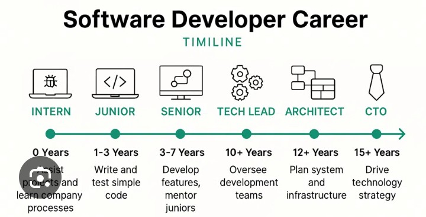
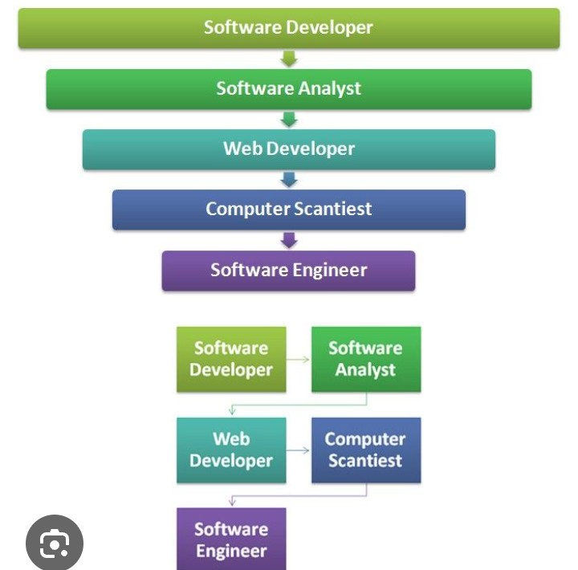

Programming is one of the fastest-growing career fields in the world. Almost every industry depends on software, websites, mobile applications, artificial intelligence, cloud computing, and automation. Because of this growing demand, programmers have become some of the most valuable professionals in today's job market. Whether you want to work for a software company, become a freelancer, or launch your own startup, programming can open countless opportunities.
The best part is that you do not need an expensive university degree to become a successful programmer. With dedication, consistent practice, and the right roadmap, anyone can build valuable programming skills. This guide will help beginners understand the complete path from learning their first programming language to getting their first developer job.
Programming offers excellent salaries, flexible working hours, remote job opportunities, freelancing options, and continuous learning. Developers solve real-world problems by creating software that improves people's lives. Technology companies are always looking for talented programmers who can design efficient and reliable applications.
Every successful developer begins by learning programming fundamentals. Understanding basic concepts makes advanced technologies much easier to learn later.
Python is one of the best programming languages for beginners because its syntax is clean and easy to understand. JavaScript is another excellent choice, especially if you want to become a web developer.
Programming has many career paths. Choose one according to your interests.
Frontend developers create beautiful and interactive websites using HTML, CSS, JavaScript, and frameworks like React.
Backend developers build the server-side logic of applications using Python, Django, Flask, Node.js, Java, or PHP.
Full stack developers work on both frontend and backend technologies. They are highly demanded by startups and software companies.
Mobile developers build Android and iOS applications using Flutter, React Native, Kotlin, or Swift.
AI engineers create intelligent systems using Machine Learning, Deep Learning, Python, TensorFlow, and Data Science.
Cybersecurity professionals protect networks and systems from cyber attacks by learning networking, Linux, ethical hacking, and security principles.

Git helps developers manage code versions while GitHub allows programmers to store projects online. Every developer should learn version control because companies use Git for collaboration.
Projects are more important than certificates because they prove your practical skills. Build projects regularly to improve your knowledge and confidence.
Every modern application stores user information inside databases. Learning SQL and database management is essential for backend and full stack developers.
Programming is not just writing code; it is solving problems efficiently. Practice coding challenges daily to improve logical thinking and analytical skills.
A professional portfolio helps employers evaluate your skills. Include your projects, resume, GitHub profile, contact information, and blog articles.
Communication, teamwork, time management, leadership, and problem-solving skills are equally important for becoming a successful software developer.
Once you have enough projects and practical knowledge, prepare your resume and apply for internships, junior developer positions, or freelance projects.
Technology changes rapidly. Keep learning new programming languages, frameworks, cloud computing, DevOps, AI tools, and software engineering practices to stay competitive.
Programming is one of the best career choices for students who enjoy learning, solving problems, and creating technology. Success requires patience, continuous practice, and real-world projects. By following this roadmap and improving your skills every day, you can build a successful programming career and work with companies or clients from anywhere in the world.